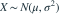
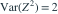

， 已知，待估参数是标准差 。一个观测关于
已知，待估参数是标准差 。一个观测关于  的 Fisher 信息是？
的 Fisher 信息是？- A
- B
- C
- D
我已思考，展开答案与解析
正确答案：D
- 关于 的得分为 。
- 写为 ，利用

，得信息量 。
易错提醒参数是标准差而非方差，两种参数的信息量不同。
JYSG · 432精选 · 册内复旦大学432·2019年·六(2)；信息量拆解；PDF第35页（印刷页33）
原题知识点延伸

， 已知，待估参数是标准差 。一个观测关于 的 Fisher 信息是？ 的得分为 。
，得信息量 。JYSG · 432精选 · 册内复旦大学432·2019年·六(2)；信息量拆解；PDF第35页（印刷页33）
原题知识点延伸